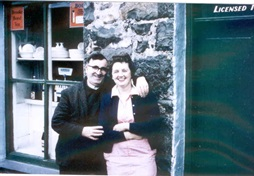
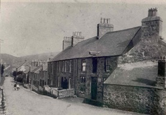
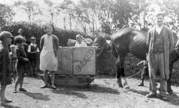

Siop Pen-y-groes
This was Elin Hughes’ shop in the early years and after that Evan Wynne and Morfudd Owen ran it as did Ceridwen Roberts for many years. Evan Wynne used to carry goods to Nant Gwrtheyrn with a horse and sleigh belonging to William Thomas, Tŷ Canol, Nant. In 1995, the postmistress and owner of Siop Pen-y-groes decided to wind up the business. A public meeting was called, and the decision was made to fundraise locally to buy the shop. Cwmni Cydweithredol Menter yr Eifl was established in 1996.
Robin and Ceridwen Roberts

Elin Hughes’s shop in the early years, which was run in later years by Evan Wyn and Morfudd Owen, Ceridwen Roberts and Carol Bonehil. The shop later became community owned, Siop Pen-y-Groes.
Evan Wynne used to carry goods to Nant Gwrtheyrn with a sleigh, which belonged to William Thomas, Tŷ Canol Nant.